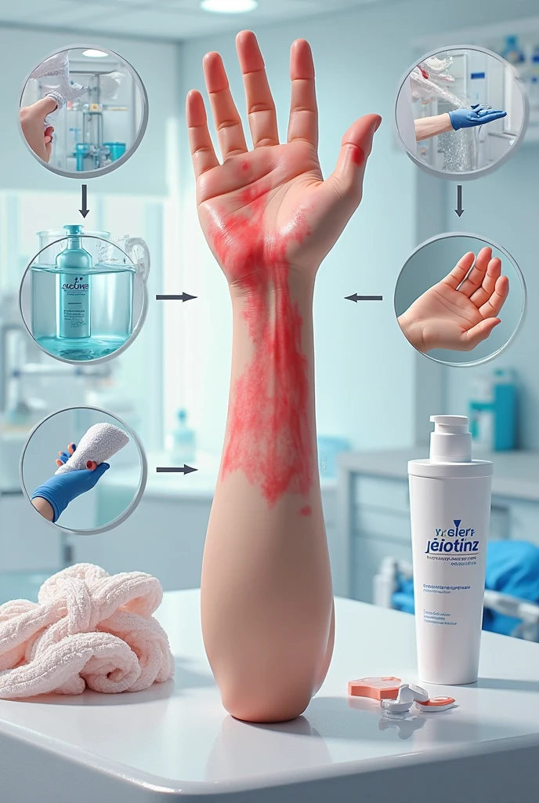

Saltar la navegación
Quemaduras
Módulo 7: Emergencias en quemaduras
Objetivo del módulo
Unidad 22: Primeros auxilios ante una quemadura
Unidad 23: Evaluar la Gravedad de la Quemadura
Artículo
Juego
Unidad 24: Quemaduras de Primer Grado:
Video interactivo
Atención de quemadura de primer grado
Evaluación
Unidad 25: Quemaduras de Segundo Grado
Video Interactivo
Práctica
Evaluación
Unidad 26: Quemaduras de Tercer Grado
Video interactivo
Práctica
Evaluación
EVALUACIÓN FINAL DEL MÓDULO
Siguiente
»
Módulo 7: Emergencias en quemaduras
Ahora veamos:
COMO ACTUAR ANTE LAS QUEMADURAS

Obra publicada con
Licencia Creative Commons Reconocimiento Compartir igual 4.0
Siguiente
»